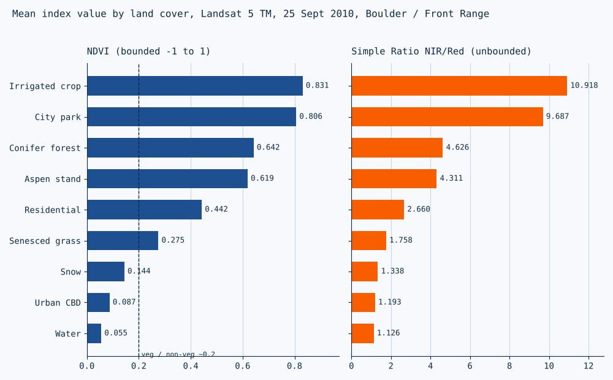

Front Range Vegetation Indices and Seasonal Change

Overview
A guided lab from Remote Sensing I at the University of Denver, using two Landsat 5 TM surface reflectance scenes of Boulder and the Front Range (21 June and 25 September 2010). The Simple Ratio (NIR divided by red) and NDVI were calculated in ENVI, then sampled with small regions of interest over nine land-cover types, from irrigated crops to downtown Denver. The chart above shows the September means. The two indices rank the classes the same way but behave differently at the ends of the range: NDVI spreads out sparse vegetation and separates vegetated from non-vegetated surfaces at about 0.2, while the Simple Ratio keeps climbing in dense canopies where NDVI flattens out. Comparing June with September then showed how harvest, leaf color change, clouds, and cloud shadow each move NDVI.
Results
- September NDVI ranged from 0.831 (irrigated crop) to 0.055 (water); senesced grass at 0.275 was the lowest vegetated class.
- Simple Ratio ran from 10.9 down to 1.1, with all non-vegetated classes below about 1.5.
- Field 1 rose from 0.391 in June to 0.719 in September (a late-season row crop); Field 2 fell from 0.686 to 0.168 (harvested, consistent with a small grain).
- An aspen stand dropped from 0.734 to 0.610 as leaves turned; a June cloud drove NDVI to -0.360 over forest that read 0.544 in September.
Processing
Coordinate Reference Systems
- Horizontal
- Landsat 5 TM, path 34 row 32, 30 m pixels
Methods
- Simple Ratio by band math and NDVI from red (band 3) and NIR (band 4) surface reflectance
- 2D scatter plot of Simple Ratio against NDVI to show where each index saturates
- Nine land-cover ROIs with mean index statistics
- Sunlit and shaded slope comparison for the same land cover
- June to September NDVI change, sorted into land-cover change, phenology, and atmospheric effects
Deliverables
- Simple Ratio and NDVI rasters for two dates
- Land-cover index table and scatter plot
- Seasonal change table with pixel locations and causes
Key Technical Challenge
Testing whether a ratio index cancels terrain shading. Two conifer pixels on opposite sides of a ridge gave NDVI of 0.447 (sunlit) and 0.599 (shaded). Part of that gap is real, since north-facing slopes carry denser forest, so shading and vegetation could not be fully separated from two pixels.
Lessons Learned
NDVI measures green leaf cover visible from above, not biomass or land use: an irrigated park scored higher than conifer forest. Use NDVI for sparse cover and vegetation masks, and an unbounded ratio where canopies are dense. Two dates beat one, because the seasonal curve identifies a crop better than any single value. Class means came from small hand-drawn samples, so they describe those samples, not the whole scene.